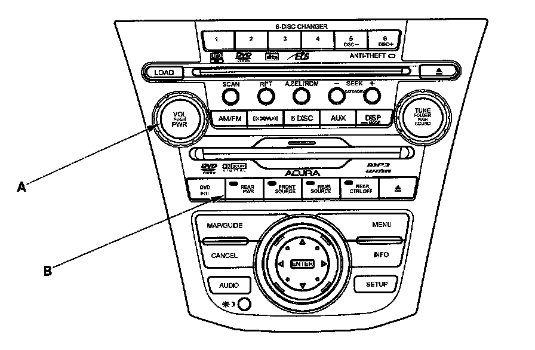
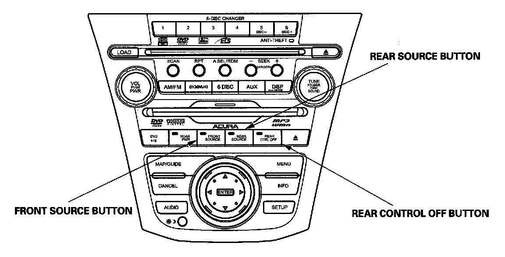
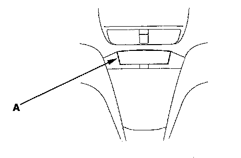
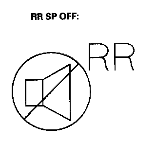
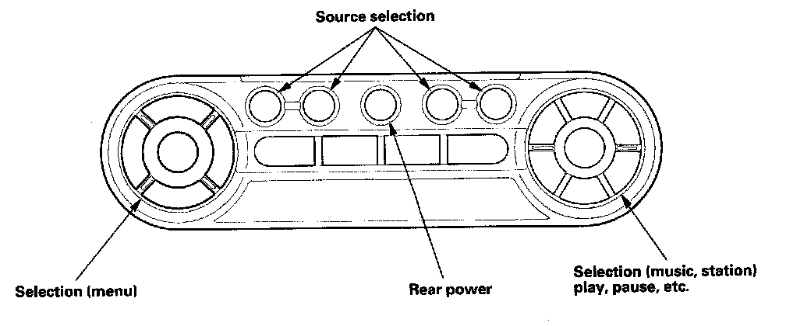
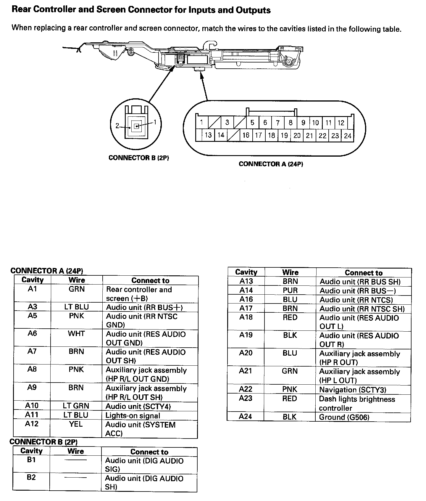
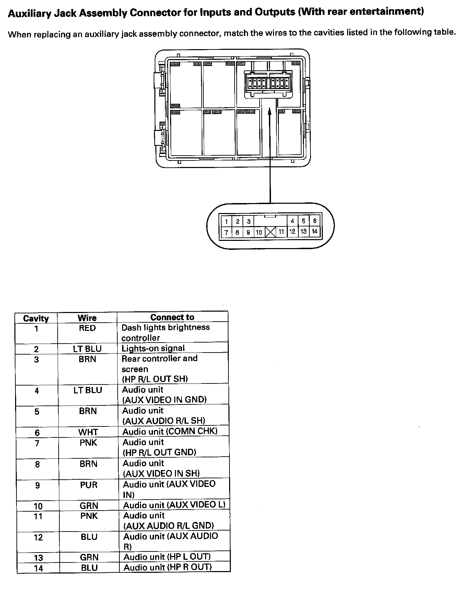

Entertainment Systems: Description and Operation
Rear Entertainment SystemSystem Description
The rear entertainment system is composed of a special DVD player unit built into the audio unit, a rear controller, and screen wireless headphones, wireless remote control, and auxiliary jack assembly.
System Components
Audio Unit
- Provides rear system power
- Provides control for the rear functions
- Allows the rear display to show information about the rear system status
- Provides a method to stop the rear passenger's from having control of the rear system
- Built into the DVD player
Rear Screen
- Has a flip down 9" display
- Allows information on the LCD
- Display does not work when pushed beyond the detent
- Provides output for infrared (IR) headphones
Wireless Headphone
- Has automatic ON/OFF control
- Has volume control
- Works only in the second and third row seats, not outside the vehicle or in the front seats
Wireless Remote Control
Allows remote operation of the audio functions.
Auxiliary Jack Assembly
- Allows input from standard video game and video equipment using RCA connectors
- Provides three headphone connectors and separate volume controls
Audio Remote Switch
Allows operation of the audio functions from the steering wheel.
Voice Control Switch
Allows operation of the audio functions through the navigation system.
Navigation Display
Allows operation of the audio functions through the navigation system.
Operating Method
NOTE: Refer to the Owner's Manual for full operation details.
Audio Unit

1. Turn the rear entertainment system ON.
- After the main power switch "VOL PUSH PWR" (A) is turned ON, push "REAR PWR" switch (B) to turn the rear system ON. To turn the rear system OFF, push "REAR PWR", and to turn the whole system OFF, push "VOL PUSH PWR".

2. Using the select button.
- Front source button, indicator light ON: control of front source from audio unit.
- Rear source button, indicator light ON: control of rear source from audio unit.
- The rear source will automatically revert back to front source after 10 seconds if no operation is done.
3. Rear Control Enable/Disable.
- By pushing the "REAR CTRL OFF" button the LED indicator will be ON and the rear seat passenger's will not be able to control the system from the remote. The rear display will show rear control OFF. Press button again to enable.

4. Viewing the display.
- The display (A) (built into the climate control unit) indicates the status of the front and rear systems.

5. Rear speaker automatic OFF Function.
- By turning the rear speaker OFF you can reduce the interference between the front source and the rear source (Headphone). The speaker will be turned ON/OFF automatically when the front and rear have different sources selected. When the rear speaker is in the OFF mode, the LCD display on the audio unit displays the rear speaker icon shown.

Wireless Remote Control
Remote control switch use and function.
- With "Rear Power ON" and rear control enabled, the rear passengers can control the functions with the remote, except volume.
- Rear passenger can control the functions, unless the rear control has been turned off by the front user.
Rear Controller And Screen Connector For Inputs And Outputs:

Rear Controller And Screen Connector For Inputs And Outputs
Auxiliary Jack Assembly Connector For Inputs And Outputs (With Rear Entertainment):

Auxiliary Jack Assembly Connector For Inputs And Outputs (With Rear Entertainment)